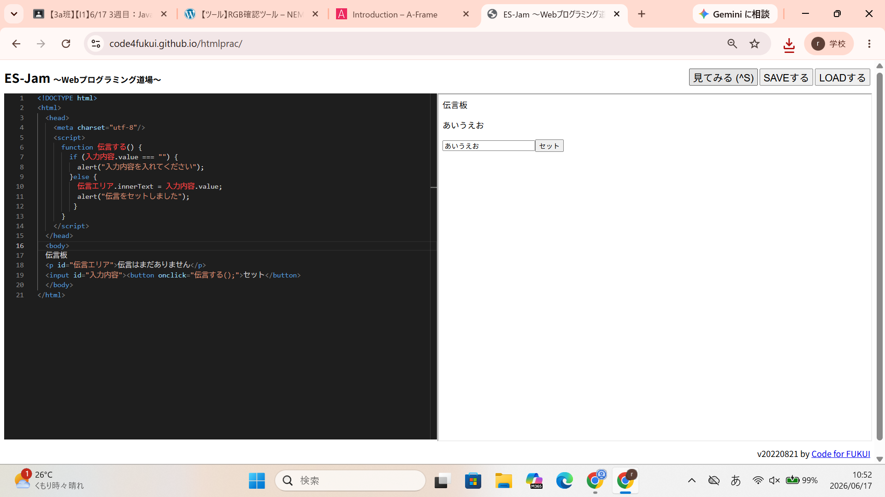

3-2 JavaScript体験：伝言プログラムを作る

伝言板
1.内容
Webプログラミング道場のサイトを使ってJavaScriptを用いたミニ伝言板アプリを作成した。
セットボタンを押すと上の欄にその入力している内容が表示されるプログラムを作成した。
また、何も入力されていない場合は入力内容を入れてくださいと表示されるプログラムである。
2.感想
最初から最後まで自分でJavaScriptのコードを入力することが出来て楽しかった。
また、知識をつけ、コードを学び、もっといろいろなアプリやゲームを作成できるようになりたいと思った。